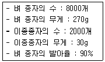
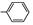

식물보호기사 (2009-03-01 기출문제)
1과목: 식물병리학
1. 세균에 대한 일반적인 설명으로 틀린 것은?
- 세균은 원핵생물이다.
- 세균은 유사분열을 한다.
- 핵막이 없다.
- 세포질에 소포체와 같은 막구조물이 없다.
(정답률: 49%)

2. 1845년 아일랜드에 큰 흉년을 가져오게 한 병은?
- 감자 탄저병
- 감자 역병
- 밀 줄기녹병
- 포도 노균병
(정답률: 89%)
3. 보리의 속깜부기병과 겉깜부기병의 구분점은?
- 기주범위
- 후벽포자의 포장에서 비산유무
- 후벽포자의 형성유무
- 위 세가지 모두 가능
(정답률: 62%)
4. 바이러스의 종자전염의 가장 문제가 되는 식물은?
- 무
- 참깨
- 담배
- 콩
(정답률: 63%)
5. 주로 토양 전염되는 병은?
- 벼 도열병
- 보리 흰가루병
- 벼 줄무늬잎마름병
- 고추 역병
(정답률: 62%)
6. 식물에 병을 일으키는 원핵생물로 곰팡이의 균사체와 비슷한 형태를 갖는 미생물은?(오류 신고가 접수된 문제입니다. 반드시 정답과 해설을 확인하시기 바랍니다.)
- 진균
- 끈적균
- 방선균
- 바이로이드
(정답률: 28%)
7. 사람이나 가축에 독작용을 나타내는 맥각중독증을 일으키는 식물병원균은?
- Gibberella fujikuroi
- Ustilago nuda
- Claviceps purpurea
- Glomerella cingulata
(정답률: 66%)
8. 균류의 분류에 대한 설명으로 틀린 것은?
- 전통적 균류의 분류는 형태적 특징과 유성번식체의 발육을 기준으로 하였다.
- 균류분자계통분류는 핵산의 염기배열에 기준을 둔다.
- 형태적 특징에 의한 균류의 분류는 변할 수 없다.
- 균류의 분류는 계통진화 연구로 다른 생물군에 비하여 유동적이라 할 수 있다.
(정답률: 75%)
9. 다음 녹병균 중 여름포자(夏胞子)를 형성하지 않는 것은?
- 포풀러 녹병
- 배나무 붉은별무늬병
- 밀 줄기녹병
- 잣나무 털녹병
(정답률: 71%)
10. 오이 모자이크병을 매개하는 곤충은?
- 끝동매미충
- 애멸구
- 번개매미충
- 복숭아혹진딧물
(정답률: 73%)
11. 모잘록병의 병원으로 거리가 먼 것은?
- Rhizoctonia solani
- Pythium debaryanum
- Fusarium oxysporum
- Alternaria kikuchiana
(정답률: 39%)
12. 벼 줄무늬잎마름병의 매개 곤충은?
- 흰불나방
- 이화명나방
- 복숭아혹진딧물
- 애멸구
(정답률: 90%)
13. 보리 줄무늬병의 방제 방법 중에서 가장 중요하며 제1차적으로 시행하여야 하는 것은?
- 윤작
- 약제 살포
- 종자 소독
- 토양 소독
(정답률: 53%)
14. 대부분의 식물병원 바이러스의 구성으로 옳은 것은?
- RNA, Coat Protein
- DNA, Coat Protein
- RNA, DNA
- RNA, DNA, Coat Protein
(정답률: 59%)
15. 병징(symptom)에 해당하는 것은?
- 흰가루병 감염 식물체의 흰가루
- 세균성 혹병 감염에 의한 뿌리혹
- 균핵병균 감염 식물체의 균핵(sclerotium)
- 녹병균 감염 식물체의 녹포자기
(정답률: 61%)
16. 감자 둘레썩음병균(輪腐病箘)이 월동하는 곳은?
- 종자
- 덩이줄기
- 토양
- 열매
(정답률: 71%)
17. 식물 세포벽을 분해하는 효소가 아닌 것은?
- 기주특이적 독소(HST)
- 셀룰로오스분해효소
- 펙틴분해효소
- 큐틴분해효소
(정답률: 85%)
18. 50%농도의 유제를 1%로 희석하여 10a 당 100ℓ를 뿌리려 할 때 소요약량은? (단, 50% 유제의 비중은 1.25 이고, 1% 희석액의 비중은 1 이라 가정한다.)
- 400㎖
- 800㎖
- 1600㎖
- 3200㎖
(정답률: 51%)
19. 식물의 흰가루병균이 갖고 있는 흡기(haustorium)란?
- 기주 세포벽의 분해 및 침입을 담당하는 균사
- 기주 세포 외부에서 산소 흡수를 담당하는 균사
- 기주 조직 표면에 흡착 및 정착을 담당하는 균사
- 기주 세포로부터 영양분의 흡수를 담당하는 균사
(정답률: 55%)
20. 불완전균류에 대한 설명으로 옳은 것은?
- 담자포자를 형성하나 자낭을 형성하지 않는다.
- 자낭포자를 형성하나 자실체를 형성하지 않는다.
- 난포자를 형성하나 접합자를 형성하지 않는다.
- 무성포자를 형성하나 유성포자를 형성하지 않는다.
(정답률: 83%)
2과목: 농림해충학
21. 가해 양식이 나머지 셋과 다른 해충은?
- 조록나무혹진딧물
- 솔껍질깍지벌레
- 버즘나무방패벌레
- 미국흰불나방
(정답률: 60%)
22. 일반적으로 곤충이 가장 강한 주광성을 나타내는 파장 범위는?
- 530 ~ 650㎚
- 430 ~ 500㎚
- 330 ~ 400㎚
- 230 ~ 300㎚
(정답률: 46%)
23. 식물의 선척적 내충성과 관계가 없는 것은?
- 내성(tolerance)
- 항생성(antibiosis)
- 비선호성(nonpreference)
- 회귀성(migration)
(정답률: 75%)
24. 변태형태와 해당하는 해충의 연결이 틀린 것은?
- 무변태 - 낫발이
- 무변태 - 돌좀
- 불완전변태 - 매미
- 완전변태 - 흰개미
(정답률: 56%)
25. 곤충의 체벽을 이루고 있는 왁스층은 어디서 분비되는가?
- 시멘트층(cement layer)
- 쿠티크린층(cuticulin)
- 내원표피층(endocuticle)
- 진피층(epidermis)
(정답률: 50%)
26. 벼물바구미의 월동태는?
- 알
- 유충
- 번데기
- 성충
(정답률: 63%)
27. 솔수염하늘소의 성충이 가장 많이 출현하는 최성기로 옳은 것은?
- 3 ~ 4월
- 4 ~ 5월
- 6 ~ 7월
- 9 ~ 10월
(정답률: 82%)
28. 곤충의 일반적 특징과 관계 없는 것은?
- 온혈동물이다.
- 부속지들이 마디로 되어 있다.
- 탈피를 통해 성장과 변태를 보이게 된다.
- 외골격이 발달하여 근육의 부착점이 된다.
(정답률: 80%)
29. 곤충의 피부가 체내로 함입되어 이루어진 기관이 아닌것은?
- 기관지(氣管支)
- 전장(前腸)
- 중장(中腸)
- 후장(後腸)
(정답률: 49%)
30. 곤충의 뇌 중에서 가장 크고 복잡하며 광(光) 감각을 받아 들이고 중앙신경분비세포군을 거느리는 것은?
- 전대뇌
- 중대뇌
- 후대뇌
- 원시뇌
(정답률: 79%)
31. 외래 침입해충으로만 묶인 것은?
- 미국흰불나방, 솔잎혹파리, 버즘나무방패벌레
- 버즘나무방패벌레, 아까시잎혹파리, 오리나무잎벌레
- 잣나무넓적잎벌, 황다리독나방, 솔껍질깍지벌레
- 황다리독나방, 솔나방, 소나무재선충
(정답률: 81%)
32. 곤충의 말피기관의 설명으로 틀린 것은?
- 혈림프의 이온 조성과 삼투압의 조절기능도 담당한다.
- 원치않는 물질은 체외로 배출하고 필요한 화합물은 체내에 남게하는 배설기관이다.
- 말피기관이 없는 곤충도 존재한다.
- 최종적으로 배설하는 질소대사물질은 독성이 매우 높고, 수용성이 아주 높은 요산형태로 배설하거나 특정 세포에 저장한다.
(정답률: 71%)
33. 이화명나방의 가해 특성으로 옳은 것은?
- 벼 줄기 속에는 한 마리의 유충만 있다.
- 한 마리의 유충이 여러 개의 벼줄기를 가해한다.
- 잎집이 말라 죽어도 부러지지는 않는다.
- 피해줄기 속에 배설물은 차 있지 않다.
(정답률: 73%)
34. 소나무좀의 화학적방제를 위한 약제 살포시기로 가장 적합한 것은?
- 2월 중순 ~ 3월 상순
- 3월 중순 ~ 4월 중순
- 4월 하순 ~ 5월 중순
- 5월 하순 ~ 6월 중순
(정답률: 69%)
35. 해충방제방법 중 생물적 방제의 장점은?
- 화학합성농약과 사용시 많은 주의가 요구된다.
- 환경의 영향을 많이 받는다.
- 효과가 빠르지 않다.
- 안전한 농산물 생산이 가능하다.
(정답률: 81%)
36. 사과굴나방의 피해상태에 대한 설명으로 틀린 것은?
- 사과나무, 배나무, 복숭아나무의 잎을 가해한다.
- 가해잎이 뒷면으로 말린다.
- 잎 표면에 구멍을 내면서 식해한다.
- 잎 뒷면에 성충이 우화하여 나간 구멍이 있다.
(정답률: 47%)
37. 곤충 및 생물 분류의 기본이 되는 단위는?
- 과
- 종
- 속
- 강
(정답률: 82%)
38. 보통 1년에 2회 발생하며 유충이 기주식물을 가해하는 해충 종은?
- 솔나방
- 미국흰불나방
- 천막벌레나방
- 밤나무혹벌
(정답률: 81%)
39. 페로몬을 이용한 해충방제에 대한 설명으로 틀린 것은?
- 집합페로몬의 경우 집단 유살을 꾀할 수 있다.
- 교미교란을 통해 산란수를 감소시킬 수 있다.
- 특정 해충의 발생을 모니터링해서 약제 방제 적기를 알려준다.
- 이종간의 교신물질로서 천적을 유인하여 해충방제효과를 높이게 된다.
(정답률: 65%)
40. 점박이응애가 식물체를 가해하여 일어나는 증상이 아닌것은?
- 잎에 흰점이 생긴다.
- 잎이 일찍 떨어진다.
- 잎이 안으로 말린다.
- 잎이 엽록소를 잃어버린다.
(정답률: 49%)
3과목: 재배학원론
41. 포장동화능력에 대한 설명으로 옳은 것은?
- 포장군락의 단위시간당의 동화능력을 포장동화능력이라 한다.
- 총엽면적, 수광능률, 평균동화능력의 적(積)으로 표시된다.
- 단위동화능력을 총엽면적에 대하여 평균한 것이다.
- 호흡에 의한 유기물 소모량을 빼고 외견상으로 나타난 광합성량을 말한다.
(정답률: 47%)
42. 작물의 생산성을 극대화하기 위한 3요소는?
- 유전성, 환경조건, 생산자본
- 유전성, 환경조건, 재배기술
- 유전성, 지대, 생산자본
- 환경조건, 재배기술, 토지자본
(정답률: 77%)
43. 작물 영양성분 중 결핍되면 분열조직에 괴사(necrosis)현상이 나타나며, 대표적으로 사탕무의 근부썩음병(속썩음병)을 일으키는 것은?
- 망간
- 철
- 칼륨
- 붕소
(정답률: 70%)
44. 다음 용어에 대한 설명으로 틀린 것은?
- C/N율 : 식물체의 탄수화물과 질소의 비율이다.
- G-D균형 : 식물의 생육이나 성숙은 분화와 균형에 의하여 재배된다는 것이다.
- T/R율 : 신장생장에 대한 비대생장의 비율이다.
- S/R율 : 작물의 지하부생장량에 대한 지상부생장량의 비율이다.
(정답률: 64%)
45. 타식성 작물의 품종 특성 유지방법은?
- 순계선발
- 격리재배
- 개체집단선발
- 계통집단선발
(정답률: 47%)
46. 벼 재배에서 식물체를 강건히 해서 도복을 막고 병해에도 저항성을 주는 생육 후기에 가장 많이 흡수되는 양분은?
- 질소(N)
- 칼륨(K)
- 규산(SiO2)
- 철(Fe)
(정답률: 69%)
47. 토양의 수분항수에 대한 설명으로 옳은 것은?
- 최대용수량은 토양의 결합수를 말하며, 포화용수량이라고도 한다.
- 영구위조점은 위조한 식물을 포화습도의 공기 중에 방치할 때 12시간내에 회복되지 못하는 수분이다.
- 수분 포화 상태의 토양에서 증발을 억제하고 중력수를 완전히 배제하고 남은 수분상태가 포장용수량이다.
- 초기위조점은 생육이 정지하고, 포화습도의 공기중에 두어도 회복되지 못하는 수분상태이다.
(정답률: 60%)
48. 접목의 이점이 아닌 것은?
- 품질을 향상시킨다.
- 수세를 조절한다.
- 품종 개량에 이용한다.
- 병충해 저항성을 증대시킨다.
(정답률: 56%)
49. 초지의 혼파재배에서 불리한 점은?
- 잡초의 발생이 많아진다.
- 병충해방제가 불편하다.
- 건초제조가 불편하다.
- 산초량(産草量)이 불균일하다.
(정답률: 54%)
50. 토양이나 수질 오염을 통하여 인체에 중금속 중독을 초래하기 쉬운 것은?
- 카드뮴
- 구리
- 망간
- 몰리브덴
(정답률: 80%)
51. 식물체 내의 수분퍼텐셜에 대한 설명으로 틀린 것은?
- 압력퍼텐셜과 삼투퍼텐셜이 같으면 팽만상태가 된다.
- 수분퍼텐셜과 삼투퍼텐셜이 같으면 원형질 분리가 일어난다.
- 물은 수분퍼텐셜이 높은 곳에서 낮은 곳으로 이동한다.
- 식물의 수분퍼텐셜에는 매트릭퍼텐셜이 가장 크게 영향을 미친다.
(정답률: 68%)
52. 목초의 하고현상에 대한 설명으로 옳은 것은?
- 월동목초가 단일조건에 놓이면 하고현상이 발생한다.
- 하고현상이 큰 한지형(북방형) 목초는 요수량이 작다.
- 일년생 난지형(남방형) 목초에서 여름철의 기온이 높고 건조할수록 심하다.
- 다년생 한지형(북방형) 목초에서 많이 발생한다.
(정답률: 61%)
53. 1대 잡종품종에서 잡종강세가 가장 크게 나타나는 것은?
- 단교배 종자
- 3원교배 종자
- 복교배 종자
- 합성품종 종자
(정답률: 74%)
54. 일반적으로 우리 나라에서 권장하고 있는 자식성 작물의 종자갱신 연한으로 가장 적합한 것은?
- 4년 1기
- 5년 1기
- 6년 1기
- 7년 1기
(정답률: 60%)
55. 이식재배의 장점이 아닌 것은?
- 고추는 생육기간을 연장하여 수량을 많게 한다.
- 벼 이앙재배는 논의 토지이용 효율을 높인다.
- 양배추는 도장을 억제하고 결구를 촉진한다.
- 당근은 뿌리의 발육을 촉진하여 비대해진다.
(정답률: 61%)
56. 저장 중에 작물의 종자가 발아력을 상실하는 원인과 가장 관계가 적은 것은?
- 원형질 단백의 응고
- 효소의 활력 저하
- 저장양분의 소모
- 호흡의 감소
(정답률: 43%)
57. 맥류의 동상해 대책에 속하지 않는 것은?
- 배수
- 늦심기
- 가리 비료 증시
- 밟기
(정답률: 71%)
58. 다음 시료의 순활종자(pure live seed)는?

- 64%
- 72%
- 81%
- 90%
(정답률: 60%)
59. C3식물과 C4식물의 형태와 생리적 특성을 바르게 설명한 것은?
- C3식물의 C02보상점은 C4 보다 낮다.
- C3식물의 물 이용효율이 좋다.
- C4식물은 Kranz 구조가 있다.
- C4식물의 광포화점은 C3 보다 낮다.
(정답률: 71%)
60. 벼에서 냉해에 의하여 발생이 많아지는 병해는?
- 도열병
- 잎집무늬마름병
- 흰잎마름병
- 줄무늬잎마름병
(정답률: 67%)
4과목: 농약학
61. 다음 중 카바메이트계(carbamate) 농약이 아닌 것은?
- 나크(carbaryl)
- 지오릭스(endosulfan)
- 카보(carbofuran)
- 메소밀(methomyl)
(정답률: 64%)
62. 95% 인 원제 2kg 으로 2% 분제를 만들려고 한다. 이때 소요되는 증량제의 양은 몇 kg 인가?
- 89
- 91
- 93
- 95
(정답률: 72%)
63. 석회유황합제 제조시 생석회와 황의 중량비로서 적합한 것은?
- 생석회 : 황 = 1 : 1
- 생석회 : 황 = 2 : 1
- 생석회 : 황 = 1 : 2
- 생석회 : 황 = 1 : 3
(정답률: 65%)
64. 농약의 혼용조합 중 가장 위험한 경우는?
- IBP + fenitrothion
- malathion + dichlorvos
- edifenphos + fenthion
- propanil + carbamate
(정답률: 55%)
65. 맹독성 농약이 액체일 때 경구독성의 LD50은 몇 mg/kg 미만으로 정해져 있는가?
- 1
- 5
- 10
- 20
(정답률: 44%)
66. 만코제브 원제에 함유한 ETU(Ethylene thiourea)는 발암성이 높은 화합물로 지정되어 규제하고 있다. 이 물질의 규제 기준은?
- 0.01% 이하
- 0.⑤% 이하
- 0.1 % 이하
- 0.5% 이하
(정답률: 50%)
67. 살포된 농약이 식물체나 곤충체 표면에 잘 퍼지게 하는 성질은?
- 습윤성
- 확전성
- 부착성
- 침투성
(정답률: 76%)
68. 농약 제조시 고체증량제로 사용되지 않는 것은?
- 규조토
- 탈크
- 벤토나이트
- 젤라틴
(정답률: 79%)
69. 수화제(wettable powder)를 물에 풀면 어떤 액이 되는가?
- 유탁액
- 현탁액
- 투명한 수용액
- 유용액
(정답률: 81%)
70. 메프(Fenitrothion) 유제(50%)를 1000배로 희석하여 10a당 8말(160L)을 살포하려고 할 때 Fenitrothion 유제의 소요량은 약 몇 mL 인가?
- 80
- 120
- 160
- 320
(정답률: 68%)
71. 농약 원제에 대한 설명으로 옳은 것은?
- 유효성분이 농축되어 있는 물질이다.
- 제품보다 부성분을 많이 함유하고 있다.
- 물질의 순도는 대부분 50~60% 정도이다.
- 원액에 유기 용매를 희석해 놓은 것이다.
(정답률: 82%)
72. 농약의 잔류 허용기준을 산출하는데 해당되지 않는 것은?
- 최대무작용량
- 반수치사량
- 안전계수
- 1일 섭취허용량
(정답률: 64%)
73. 유기인계 살균제로서 도열병에 대한 효과가 가장 큰 농약은?
- 아이비(IBP)
- 캡탄(Captan)
- 가스가마이신(Kasugamycin)
- 다코닐(Daconil)
(정답률: 64%)
74. LD50 에 대한 설명으로 옳은 것은?
- 농약의 농도가 50% 임을 표시한다.
- 50% 치사시키는 농약의 약량이다.
- 50% 치사시키는 농약의 농도이다.
- 50% 로 희석하였을 때 농약의 독성의 정도를 표시한다.
(정답률: 53%)
75. 살균제의 작용기작 중 호흡에 대한 저해작용이 아닌 것은?
- SH기 저해
- 전자전달계 저해
- 단백질합성 저해
- 산화적 인산화반응 저해
(정답률: 52%)
76. 피레드린(Pyrethrin)성분을 함유하는 천연살충용 식물은?
- 송지
- 테리스
- 제충국
- 연초
(정답률: 79%)
77. 유기인계 농약의 살충 작용점은?
- 원형질
- 피부
- 호흡기
- 신경
(정답률: 68%)
78. 병균이 식물체에 침투하는 것을 방지하기 위해 쓰이는 약제로, 예방을 목적으로 사용되며 약효시간이 긴 특징을 갖고 있는 것은?
- 보호살균제
- 직접살균제
- 종자소독제
- 토양살균제
(정답률: 80%)
79. 다음 농약 중 쥐에 대한 급성경구 독성이 가장 강한 농약은?
- 이피엔(EPN)
- 다이아지논(Diazinon)
- 메프(Fenitrothion)
- 카바릴(Carbaryl)
(정답률: 69%)
80. 다음 중 친수기(親水基)가 아닌 것은? (문제오류로 정답은 4번입니다.)
- -S03H
- -C00Na
- -CN

(정답률: 77%)
5과목: 잡초방제학
81. 제초제의 엽면 흡수와 관련하여 옳은 설명은?
- 제초제는 펙틴, 큐티클납질, 큐틴의 순으로 흡수된다.
- 비극성 정도는 큐틴, 큐티클납질, 펙틴의 순으로 높다.
- 비극성 화합물은 큐티클납질을 통과하기가 어렵다.
- 극성 화합물은 셀룰로오스층을 통과하기가 쉽다.
(정답률: 50%)
82. 식물의 종내 경합이란?
- 같은 종내의 개체간의 경합
- 서로 다른 종(種)간의 경합
- 식물 상호간의 경합
- 작물과 잡초와의 경합
(정답률: 78%)
83. 피토크롬(phytochrome) 체계가 주로 관여하는 발아 환경요인은?
- 광
- 산소
- 온도
- 수분
(정답률: 76%)
84. 잡초가 농경지에 빈번하게 다발생할 수 있는 이유로 거리가 먼 것은?
- 종자의 휴면성이 결여되어 있기 때문이다.
- 종자를 다량생산하기 때문이다.
- 번식능력이 높고 다양하기 때문이다.
- 불량한 환경조건에 잘 적응하기 때문이다.
(정답률: 79%)
85. 유효성분 함량이 5% 인 제초제 A 입제를 성분량으로 120g 사용하고자 한다. 실제 사용해야 할 제품량은?
- 600g
- 1200g
- 2400g
- 3000g
(정답률: 47%)
86. 상호대립억제작용(allelopathy)과 관계가 먼 것은?
- 잡초가 태양을 가려 작물의 광합성을 저해하는 것이다.
- 잡초에서 생성되어 분비된 물질이 작물의 생장에 영향을 미치는 것이다.
- 작물에 의해 잡초의 생육이 억제되는 경우도 있다.
- 잡초의 종에 따라 각기 다르게 나타난다.
(정답률: 61%)
87. 지하 영양번식 기관인 괴경의 형성에 촉진적인 작용을 미치는 식물생장조절제는?
- Auxin
- GA
- ABA
- Cytokinin
(정답률: 41%)
88. 토양처리형 제초제의 약효결정에 영향을 미치는 토양흡착 기구에 해당하지 않는 것은?
- 글루타치온 결합
- 이온 교환 흡착
- 수소 결합
- 반데르발스 결합
(정답률: 46%)
89. 동일한 발생밀도 조건에서 벼와 경합력이 가장 큰 논잡초는?
- 물달개비
- 피
- 마디꽃
- 올미
(정답률: 82%)
90. 벼 재배조건 중 벼가 경합에 가장 불리한 재배법은?
- 어린모 재배
- 중묘재배
- 무경운 기계이앙재배
- 담수표면 산파재배
(정답률: 56%)
91. 잡초와의 경합력이 큰 작목 및 품종을 선발하여 재배하는 잡초 방제법은?
- 화학적 방제법
- 물리적 방제법
- 생태적 방제접
- 예방적 방제법
(정답률: 68%)
92. 5%의 유효성분을 가진 Butachlor 입제를 3kg/10a 로 논에 처리하였다. 물의 깊이를 5cm 로 가정할 때 논 물에 함유된 Butachlor 농도는 몇 ppm 인가?
- 2ppm
- 3ppm
- 5ppm
- 10ppm
(정답률: 49%)
93. 광발아 잡초는?
- 바랭이
- 냉이
- 광대나물
- 별꽃
(정답률: 69%)
94. 잡초의 학명 표기법에 대한 설명으로 틀린 것은?
- 속명과 종명은 이탤릭체로 쓰는 것이 원칙이다.
- 라틴어로 쓰여지고 라틴어 발음으로 읽는다.
- 일반적으로 Linne가 제창한 삼명법이 쓰인다.
- 속명, 종명, 명명자 순으로 표기한다.
(정답률: 43%)
95. 잡초방제를 위한 생물적 방제법의 장점은?
- 비교적 영속성이 없다.
- 방제법이 간단하다.
- 외래 천적의 도입은 그만큼 안전하다.
- 장기간의 세월이 소요되나 일단 찾아내기만 하면 효과를 거두는데 단기간의 세월이 소요된다.
(정답률: 50%)
96. 광엽 1년생 잡초인 것은?
- 여뀌
- 가래
- 네가래
- 개구리밥
(정답률: 76%)
97. 잡초의 유익성에 대한 설명으로 거리가 먼 것은?
- 토양에 많은 종자제공
- 토양침식 방지
- 토양물리 환경개선
- 자원으로 이용 가능
(정답률: 74%)
98. 잡초와 작물의 경합에 있어서 잡초의 특성에 대한 설명으로 틀린 것은?
- 발아 및 초기생장이 빠르고 건물중 생산이 매우 효율적인 C3광합성 싸이클을 가지고 있다.
- 일반적으로 경합에 있어서 유리한 형태적 특성을 지니고 있다.
- 종자나 지하경은 휴면을 가지고 있다.
- 불리한 환경 조건에서도 잘 자란다.
(정답률: 69%)
99. 제초제의 선택성과 관련이 적은 것은?
- 선별 대사
- 선별 이행
- 선별 흡수
- 선별 광합성
(정답률: 60%)
100. 두 제초제를 혼합처리시 상승작용이란 어떤 것을 의미하는 가?
- 두 제초제를 혼합처리시 보다 단독처리가 더 효과적인 것을 의미함
- 두 제초제를 혼합처리시 단독처리 때보다 효과가 큰 것을 의미함
- 두 제초제를 혼합처리시 단독처리와 효과가 같은 것을 의미함
- 두 제초제를 혼합처리시 식물의 생리적 장애 현상을 의미함
(정답률: 78%)